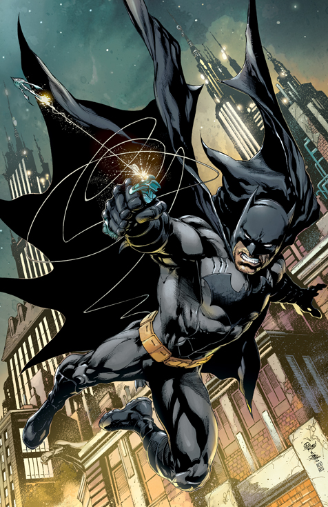

«Cuando era Bruce Wayne, pensé que con suficiente preparación, siempre ganaría. Pero me equivoqué. Estaba atrapado en una guerra imposible de ganar, negándome a ver las respuestas obvias justo frente a mí. Las respuestas que son tan claras para mí ahora con la victoria a la vuelta de la esquina. Para ganar, necesitas adaptarte, y para adaptarte, necesitas poder reírte de todas las restricciones. Todo lo que te detiene. Verás... un Batman que se ríe... es un Batman que siempre gana. HAHAHAHAHAHAHAHA!» ― El Batman que Ríe a su victima.
El Batman que ríe es Bruce Wayne proveniente de la Tierra -22 del Multiverso Oscuro, es un psicópata asesino que sirve a las órdenes de Barbatos. Convertido en el nuevo Joker de su mundo tras ser infectado por su toxina al matarlo, él vive con el propósito de conquistar y propagar el caos para prolongar su diversión.

Cuando Bruce era joven sus padres fueron asesinados en el Callejón del Crimen. Luego de jurar sobre sus tumbas que dedicaría su vida a combatir el crimen para que nadie más tuviera que experimentar una tragedia como la suya, Bruce entreno durante muchos años de detective hasta convertirse en un excelente luchador y Un habilidoso. Al regresar a Ciudad Gótica adoptó la identidad de Batman para poder luchar contra el crimen sin comprometer el legado de su familia.Al cabo de un tiempo Bruce fue reclutando aliados que lo ayudaron a luchar en su cruzada, desde el departamento de policía, encabezado por su amigo Jim Gordon, hasta la nueva familia que conformó junto a Dick Grayson, Barbara Gordon, Jason Todd, Tim Drake y su hijo biológico Damian Wayne.
Gracias a su carrera Bruce también conoció a otros héroes que eventualmente lo invitaron a unirse a la Liga de la Justicia, lo cual en principio le hizo sentirse muy nervioso. Cada vez que Batman recolectaba un objeto de procedencia alienigena en alguna de sus misiones con la Liga, él supo guardarlo en el Salón de Trofeos de la Atalaya para luego dedicarse a estudiarlo y averiguar cómo y para qué funcionaba. Debido a sus Interacciones con la Liga Bruce se convirtio en el mejor amigo de Superman, pero debido a su desconfianza natural no se privó de elaborar diferentes planos para acabar con sus compañeros de la Liga en caso de ser necesario.Sin embargo, cuando sus compañeros se enteraron de sus planes, se produjo una de las épocas más oscuras para la Liga.
Los años de luchar contra el crimen enfrentaron a Batman contra un sinfín de rivales, pero ninguno de ellos fue tan vil y brutal como el Guasón. Durante mucho tiempo ambos entablaron una relación que se asemejó al juego del gato y el ratón, pero una noche todo cambió. Sabiendo que la quedaba poco tiempo de vida, el payaso pergenio un plan para obligar a Batman a matarlo y así convertirlo en su sucesor. En una serie de eventos indeterminados el Guasón y sus secuaces acabaron con todo el DPCG, incluso James Gordon, y secuestraron a Batman.Creyendo fervientemente en que las reglas del juego tenían que cambiar y que ambos tenían que evolucionar, el Guasón hizo secuestrar a todas las familias en la ciudad para matar a los padres frente a sus hijos y así crear una nueva población de niños traumados igual que Batman e infectados con su toxina. Inundado por una ira asesina ante tal atrocidad, Bruce se liberó de sus ataduras y atacó al Guasón sin restricción hasta matarlo rompiéndole el cuello. De pronto un gas misterioso escapó de la boca e infecto a Batman contra su voluntad.